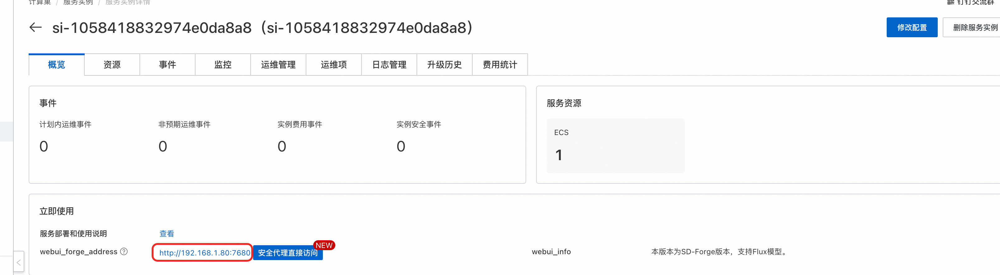

🎨 Stable Diffusion 1.5 模型使用指南
开源AI图像生成的经典之作 • 轻量高效 • 生态丰富
📖 模型简介
**Stable Diffusion 1.5** 是由 Stability AI 开发的经典文本到图像生成模型，作为开源AI图像生成领域的里程碑之作，至今仍是最受欢迎和应用最广泛的模型之一。该模型以其轻量化、高效率和丰富的生态系统而闻名，是AI图像生成的入门首选。
🚀 核心特性
🚀 性能优势
- 轻量高效: 仅需6GB显存即可运行
- 快速生成: 推理速度快，适合批量生成
- 稳定可靠: 经过大量实际应用验证
🎨 功能特色
- 风格多样: 支持写实、二次元、艺术等多种风格
- 易于定制: 支持LoRA、Textual Inversion等微调技术
- 生态丰富: 拥有庞大的社区和丰富的扩展生态
📊 技术规格
⚙️ 配置说明
💻 系统要求
💡 最低配置要求
ECS的GPU显存: 6GB以上
ECS的GPU显存: 6GB以上
📁 模型文件
📖 使用指南
🌐 Web UI 使用
📋 基础操作流程
**1. 模型选择**
- 在左上角模型选择器中选择SD1.5模型

**2. 提示词输入**
- **正向提示词**: 详细描述想要生成的图像内容
- **负向提示词**: 描述不想要的元素（SD1.5对负向提示词响应良好）
**3. 参数设置**
- **步数**: 推荐 20-30步（生成质量与速度的平衡）
- **CFG Scale**: 推荐 7-12（提示词遵循程度）
- **采样器**: 推荐 DPM++ 2M Karras / Euler a
- **分辨率**: 512×512（原生分辨率，效果最佳）
**4. 高级设置**
- **种子**: 控制随机性，-1为随机
- **批次**: 设置生成数量
- **高分辨率修复**: 生成更大尺寸图像
🎨 推荐参数组合
⚡ 快速生成
- 步数: 20步
- CFG: 7
- 采样器: Euler a
- 分辨率: 512×512
💎 高质量
- 步数: 30步
- CFG: 9-11
- 采样器: DPM++ 2M Karras
- 分辨率: 768×768
🎨 艺术风格
- 步数: 25步
- CFG: 8-10
- 采样器: DDIM
- 分辨率: 512×768
🔌 API 调用
💡 重要提示
需要将
需要将
BASE_URL 和 APIKEY 替换为实际值。如果要用公网调用，则选择公网的ip:端口。

🐍 点击展开API调用Python代码
import requests
import base64
# 🔧 配置信息
base_url = "<部署服务的Output URL>"
username = "admin"
apikey = "${APIKEY}"
auth = (username, apikey)
# 🔄 1. 切换模型
model_data = {
"sd_model_checkpoint": "v1-5-pruned-emaonly.safetensors"
}
print("🔄 正在切换模型...")
model_response = requests.post(f"{base_url}/sdapi/v1/options", json=model_data, auth=auth)
print("✅ 模型切换完成")
# 🎨 2. 生成图片
prompt = "a beautiful cat"
data = {
"prompt": prompt,
"steps": 20,
"width": 512,
"height": 512
}
print("🎨 正在生成图片...")
response = requests.post(f"{base_url}/sdapi/v1/txt2img", json=data, auth=auth)
result = response.json()
# 💾 3. 保存图片
if "images" in result:
image_data = base64.b64decode(result["images"][0])
with open("output.png", "wb") as f:
f.write(image_data)
print("✅ 图片已保存为 output.png")
else:
print("❌ 错误:", result)
💡 提示
若未开启APIKEY，请使用以下代码修改请求：
若未开启APIKEY，请使用以下代码修改请求：
model_response = requests.post(f"{base_url}/sdapi/v1/options", json=model_data)
📚 相关资源
🎯 最佳实践
✍️ 提示词技巧
- 使用具体的描述词而非抽象概念
- 添加艺术家名字来指定风格
- 使用权重语法 (word:1.2) 强调重要元素
- 负向提示词排除不需要的内容
⚙️ 参数调优
- 从低步数开始测试，逐步增加
- CFG过高会导致过度饱和
- 不同采样器适合不同风格
- 使用固定种子复现满意结果
❓ 常见问题
❓ 生成的图像质量不佳怎么办？
解决方案：
- 增加生成步数到30-50步
- 调整CFG Scale到8-12
- 使用更详细的提示词
- 尝试不同的采样器
- 考虑使用高质量VAE
❓ 显存不足如何处理？
优化建议：
- 降低生成分辨率到512×512
- 减少批次大小
- 启用低显存模式
- 关闭不必要的扩展
- 使用精度优化选项
❓ 如何获得特定风格的图像？
风格控制方法：
- 在提示词中添加艺术家名字
- 使用风格关键词（如"oil painting", "anime style"）
- 下载并使用专门的风格LoRA
- 参考社区分享的提示词模板
- 调整CFG Scale影响风格强度
🎨 开始你的AI艺术创作之旅！ | Stable Diffusion 1.5 - 让创意无限可能
© 2009-2022 Aliyun.com 版权所有